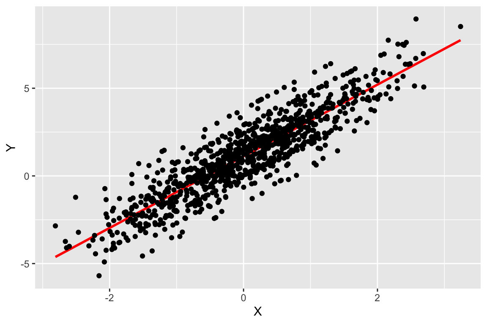

Chapter 4 Week 4: Regression II (Model Specification)
4.1 Aims
- Using multiple regressors and interaction terms in regression analysis for quantitative descriptive purposes with real data
- Using simulation to instantiate how different properties of the data generating process alter or not metrics of goodness of fit
4.2 Exercise: Context and questions
Currently led by Prof. Anke Tresch, “[t]he Swiss Election Study (Selects) has been investigating the electoral behaviour of Swiss citizens in national elections since 1995. The project sheds light on the dynamics of the citizens’ opinion formation as well as on the determinants of their political participation and voting choice for a specific candidate or party.” See more here.
In this exercise, you will use data for the year 2019. You will use it to answer the following questions:
- Do older voters have stronger right leaning preferences than younger ones?
- Do political preferences vary across sexes?
- Do political preferences vary across the main language spoken at the respondent’s home?
- Do differences in political preferences across sexes vary depending on the respondents’ age?
- Do differences in political preferences across sexes vary depending on the respondents’ main language?
- Do differences in political preferences across main languages vary depending on the respondents’ age?
- Do differences in political preferences across sexes vary depending on the respondents’ age and main language?
4.3 Adjusting the data first
In the folder SELECTS 2019, you can find the file data.csv. It is a version of the SELECTS data for 2019 only with the variables relevant for our exercise.
- Open the file:
- In order to store information in smaller files, researchers use codebooks to numerically represent values that, otherwise, would be much more space consuming in their respective representation in text form. Use the file
Selects2019_Codebook_EN.pdfto create the variableLanguageHomewhere the numerical values for the variablef20221(i.e., “Main language spoken in family or at home”) are preplaced with their respective text values.
selects19 <- selects19 %>%
mutate(LanguageHome = case_when( #a new variable is created
#each numerical value in the codebook is replace with it's corresponding text value
f20221 == 1 ~ "German/Swiss German",
f20221 == 2 ~ "French",
f20221 == 3 ~ "Italian",
f20221 == 4 ~ "Romansh",
f20221 == 5 ~ "Other"))- As we have seen in week 1, it is a good practice to name your variables so their interpretation is easy. For example, instead of using
sexas a variable name, usingfemalefacilitates understanding that a zero representsmalewhile a one representsfemale. Again, use the codebook to transform the variablesexintofemale.
Relabel the sex variable:
Rename the variable sex as female. Take the chance and rename f15200 (i.e., “Left-right placement - Self”) as LeftToRight.
- Print the name of all the variables available so you can use them later on.
## [1] "female" "age" "LeftToRight" "f20221" "LanguageHome"4.4 Exercise: solution
Note: Remember that you can copy the code from one point to answer another point. Simply make the necessary adjustments.
4.4.1 Real data
- Graph age vs. political preferences. Use a linear regression line to describe how the variables relate to each other.
#Means for Y and X: to have a clearer notion on the center of mass of the data.
mean_LeftRight <- mean(selects19$LeftToRight, na.rm = TRUE)
mean_age <- mean(selects19$age, na.rm = TRUE)
# Create a scatter plot
ggplot(selects19, aes(x = age, y = LeftToRight)) +
geom_point() +
# Adding the regression line
geom_smooth(method = "lm", formula = y ~ x, se = FALSE, color = "red") +
# Horizontal line at the mean of y
geom_hline(yintercept = mean_LeftRight, linetype = "dashed", color = "green") +
# Vertical line at the mean of x
geom_vline(xintercept = mean_age, linetype = "dashed", color = "orange") +
theme_minimal() +
theme(plot.title = element_text(hjust = 0.5)) +
labs(
x = "Age (years)",
y = "Political Preferences (left to right)",
title = "Scatter plot Age vs. Political Preferences"
)
Therefore, we can say that, indeed, older voters have stronger right leaning preferences than younger ones.
- Since the political preferences as well as years are defined in discrete values, many values can overlap for the same pair
(preference, age). Use theggridgespackage to see how do preferences distribute across different age values.
ggplot(selects19, aes(x = age, y = as.factor(LeftToRight), fill = as.factor(LeftToRight))) +
# to show the age distribution for each level of political preference
geom_density_ridges() +
geom_smooth(data = selects19, aes(x = age, y = LeftToRight, group = 1),
method = "lm", formula = y ~ x, color = "red", se = FALSE) +
geom_hline(yintercept = mean_LeftRight, linetype = "dashed", color = "green") +
geom_vline(xintercept = mean_age, linetype = "dashed", color = "orange") +
scale_fill_viridis_d() +
theme_minimal() +
theme(legend.position = "none") +
theme(plot.title = element_text(hjust = 0.5)) +
labs(x = "Age (years)",
y = "Political Preferences (left to right)",
title = "Political preferences by age level",
fill = "factor(LeftToRight)")- Regress the political preferences on age. As we learnt in the exercises from last week, the regression with intercept fits data better in most cases: act accordingly. Report and interpret the parameters. Graph some of the main components of the regression output.
- Write the regression here.
##
## Call:
## lm(formula = LeftToRight ~ age, data = selects19)
##
## Residuals:
## Min 1Q Median 3Q Max
## -5.9150 -2.0380 -0.0186 2.1958 5.5271
##
## Coefficients:
## Estimate Std. Error t value Pr(>|t|)
## (Intercept) 4.122055 0.106375 38.750 <2e-16 ***
## age 0.019489 0.001979 9.846 <2e-16 ***
## ---
## Signif. codes: 0 '***' 0.001 '**' 0.01 '*' 0.05 '.' 0.1 ' ' 1
##
## Residual standard error: 2.649 on 5905 degrees of freedom
## Multiple R-squared: 0.01615, Adjusted R-squared: 0.01598
## F-statistic: 96.94 on 1 and 5905 DF, p-value: < 2.2e-16- Report and interpret the parameters here.
## (Intercept) age
## 4.12205528 0.01948902The beta value for (Intercept) is 4.12, and for rnames(coeffs[2])` is 0.02.
It means that, given our model, an increase of one year in age across the Swiss citizens is associated with an average increase in the LeftToRight self-declared scale of 0.02 ideological units. Likewise, , given our model, newborns can be expected to have an average ideological value of 4.12, while 100 year old citizens can be expected to have an average ideological value of 6.12. We must, nonetheless, remain cautious and keep our predictions as much as possible within the range of regressors our sample provides us with.
- Graph some of the main components of the regression output here.
ggplot(selects19, aes(x = age, y = LeftToRight)) + # Removed selects19$ from aes(), not necessary
geom_point(size = 0.001) +
geom_abline(aes(intercept = unname(coeffs[1]),
slope = 0,
color = "Newborn")) +
geom_abline(aes(intercept = unname(coeffs[1]),
slope = unname(coeffs[2]),
color = "Average individual over time")) +
# Define colors for the legend
scale_color_manual(name = "Lines", values = c("Newborn" = "gray", "Average individual over time" = "red")) +
theme_minimal() +
theme(plot.title = element_text(hjust = 0.5)) +
labs(
x = "Age (years)",
y = "Political Preferences (left to right)",
title = "Relationship political preferences across ages"
)- Now regress
LeftToRightonageandfemale. do the same as in the previous point. Report and interpret the parameters. Graph some of the main components of the regression output. Write the regression here.
##
## Call:
## lm(formula = LeftToRight ~ age + female, data = selects19)
##
## Residuals:
## Min 1Q Median 3Q Max
## -6.2108 -1.9784 0.0954 2.1145 5.8236
##
## Coefficients:
## Estimate Std. Error t value Pr(>|t|)
## (Intercept) 4.492964 0.112519 39.931 <2e-16 ***
## age 0.018672 0.001966 9.496 <2e-16 ***
## female -0.652678 0.068477 -9.531 <2e-16 ***
## ---
## Signif. codes: 0 '***' 0.001 '**' 0.01 '*' 0.05 '.' 0.1 ' ' 1
##
## Residual standard error: 2.629 on 5904 degrees of freedom
## Multiple R-squared: 0.03106, Adjusted R-squared: 0.03073
## F-statistic: 94.63 on 2 and 5904 DF, p-value: < 2.2e-16Report and interpret the parameters here.
## (Intercept) age female
## 4.49296422 0.01867214 -0.65267756The beta value for (Intercept), ’ is 4.49, for age, is 0.02, and for female is -0.65.
It means that, given our model, an increase of one year in age across the Swiss citizens is associated with an average increase in the LeftToRight self-declared scale of 0.02, ideological units. Likewise, male newborns can be expected to have an average ideological value of 4.49, while 100 year old male citizens can be expected to have an average ideological value of 6.49. Similarly, for each of those scenarios, should the individual be a female, it can be expected to have an average of 0.65 ideological units lower than a male individual under the same statistical circumstances. In other words, by design, our particular model only captures the average evolution of ideology over time but does not distinguish whether nor how it varies across sexes. Finally, just as in the previous point, we must remain cautious and keep our predictions as much as possible within the range of regressors our sample provides us with.
- Graph some of the main components of the regression output here.
ggplot(selects19, aes(x = age, y = LeftToRight)) +
geom_point(size = 0.001) +
geom_abline(aes(intercept = unname(coeffs[1]), slope = 0, color = "Male newborn")) +
geom_abline(aes(intercept = unname(coeffs[1]) + unname(coeffs[3]), slope = 0, color = "Female newborn")) +
geom_abline(aes(intercept = unname(coeffs[1]), slope = unname(coeffs[2]), color = "Male over time")) +
geom_abline(aes(intercept = unname(coeffs[1]) + unname(coeffs[3]), slope = unname(coeffs[2]), color = "Female over time")) +
scale_color_manual(name = "Lines", values = c("Male newborn" = "gray", "Female newborn" = "red", "Male over time" = "orange", "Female over time" = "purple")) +
theme_minimal() +
theme(plot.title = element_text(hjust = 0.5)) +
labs(
x = "Age (years)",
y = "Political Preferences (left to right)",
title = "Relationship political preferences across ages by sex \n(without interaction)",
color = "Line Type"
)
- You now remember that average political preferences across age can change across sexes: i.e., the average preferences across individuals in a same sex can change at different rates over time as well as begin from different departure points. Add the interaction
Ageandfemaleand do the same as in the previous point.
Write the regression here.
##
## Call:
## lm(formula = LeftToRight ~ age * female, data = selects19)
##
## Residuals:
## Min 1Q Median 3Q Max
## -5.9332 -2.0641 0.0372 2.1848 6.0372
##
## Coefficients:
## Estimate Std. Error t value Pr(>|t|)
## (Intercept) 4.847656 0.152489 31.790 < 2e-16 ***
## age 0.011799 0.002801 4.213 2.56e-05 ***
## female -1.340734 0.211254 -6.347 2.37e-10 ***
## age:female 0.013528 0.003930 3.443 0.00058 ***
## ---
## Signif. codes: 0 '***' 0.001 '**' 0.01 '*' 0.05 '.' 0.1 ' ' 1
##
## Residual standard error: 2.626 on 5903 degrees of freedom
## Multiple R-squared: 0.033, Adjusted R-squared: 0.03251
## F-statistic: 67.15 on 3 and 5903 DF, p-value: < 2.2e-16Report and interpret the parameters here.
## (Intercept) age female age:female
## 4.84765642 0.01179933 -1.34073442 0.01352810The beta value for (Intercept) is 4.85 for age is 0.01 for female is -1.34 and for age:female is 0.01.
It means that, given our model, an increase of one year in age across the male Swiss citizens is associated with an average increase in the LeftToRight self-declared scale of 0.01 ideological units. Likewise, while male newborns can be expected to have an average ideological value of 4.85, female newborns can be expected to have an average ideological value of 3.51. Also, while 100 year old male citizens can be expected to have an average ideological value of 5.85, 100 year old females can be expected to have an average ideological value of 5.51.
Finally, while, given our model, females have lower initial ideological initial values, the rate at which right leaning preferences increase among them over time is 0.01 ideological units per year higher than in males. Therefore, we can expect males’ and females’ average ideological values to converge when they are around 100 years old. Finally, just as in the previous point, we must remain cautious and keep our predictions as much as possible within the range of regressors our sample provides us with.
- Graph some of the main components of the regression output here.
ggplot(selects19, aes(x = age, y = LeftToRight)) +
geom_point(size = 0.001) +
geom_abline(aes(intercept = unname(coeffs[1]), slope = 0, color = "Male newborn")) +
geom_abline(aes(intercept = unname(coeffs[1]) + unname(coeffs[3]), slope = 0, color = "Female newborn")) +
geom_abline(aes(intercept = unname(coeffs[1]), slope = unname(coeffs[2]), color = "Male over time")) +
geom_abline(aes(intercept = unname(coeffs[1]) + unname(coeffs[3]), slope = unname(coeffs[2])+unname(coeffs[4]), color = "Female over time")) +
scale_color_manual(name = "Lines", values = c("Male newborn" = "gray", "Female newborn" = "red", "Male over time" = "orange", "Female over time" = "purple")) +
theme_minimal() +
theme(plot.title = element_text(hjust = 0.5)) +
labs(
x = "Age (years)",
y = "Political Preferences (left to right)",
title = "Relationship political preferences across ages by sex \n(with interaction)"
)Unlike the previous point, in this point our model did not presume that the rate at which right leaning preferences increase among them over time is shared between males and females. Indeed, what the model shows is that both the intercepts and slopes are different for both groups. Particularly, give our model, the particular mix of intercepts and slopes allow females and males to converge on their average ideological values over time.
- Following the same logic as in the previous point, you now add the
LanguageHomecategorical variable with the corresponding interactions. Do the same as in the previous point.
Write the regression here.
#regression
result <- lm(LeftToRight ~ age * female * LanguageHome, data = selects19)
summary(result)##
## Call:
## lm(formula = LeftToRight ~ age * female * LanguageHome, data = selects19)
##
## Residuals:
## Min 1Q Median 3Q Max
## -6.1650 -2.0129 0.0157 2.0714 6.1504
##
## Coefficients:
## Estimate Std. Error t value
## (Intercept) 4.6522028 0.2598442 17.904
## age 0.0092259 0.0048428 1.905
## female -1.2217711 0.3489102 -3.502
## LanguageHomeGerman/Swiss German 0.1982265 0.3407428 0.582
## LanguageHomeItalian 0.8741812 0.4954660 1.764
## LanguageHomeOther 0.5409228 0.7585873 0.713
## LanguageHomeRomansh -1.2787995 2.0100116 -0.636
## age:female 0.0140639 0.0065181 2.158
## age:LanguageHomeGerman/Swiss German 0.0055441 0.0062621 0.885
## age:LanguageHomeItalian -0.0030304 0.0092982 -0.326
## age:LanguageHomeOther -0.0095835 0.0145811 -0.657
## age:LanguageHomeRomansh 0.0466591 0.0397951 1.172
## female:LanguageHomeGerman/Swiss German -0.1885585 0.4684575 -0.403
## female:LanguageHomeItalian 0.5629460 0.7043389 0.799
## female:LanguageHomeOther -1.6468317 0.9783983 -1.683
## female:LanguageHomeRomansh -1.0259620 4.0396347 -0.254
## age:female:LanguageHomeGerman/Swiss German -0.0002337 0.0086831 -0.027
## age:female:LanguageHomeItalian -0.0124492 0.0133246 -0.934
## age:female:LanguageHomeOther 0.0265266 0.0193016 1.374
## age:female:LanguageHomeRomansh -0.0041536 0.0833735 -0.050
## Pr(>|t|)
## (Intercept) < 2e-16 ***
## age 0.056817 .
## female 0.000466 ***
## LanguageHomeGerman/Swiss German 0.560759
## LanguageHomeItalian 0.077723 .
## LanguageHomeOther 0.475833
## LanguageHomeRomansh 0.524661
## age:female 0.030994 *
## age:LanguageHomeGerman/Swiss German 0.376011
## age:LanguageHomeItalian 0.744501
## age:LanguageHomeOther 0.511041
## age:LanguageHomeRomansh 0.241051
## female:LanguageHomeGerman/Swiss German 0.687324
## female:LanguageHomeItalian 0.424175
## female:LanguageHomeOther 0.092391 .
## female:LanguageHomeRomansh 0.799525
## age:female:LanguageHomeGerman/Swiss German 0.978527
## age:female:LanguageHomeItalian 0.350189
## age:female:LanguageHomeOther 0.169395
## age:female:LanguageHomeRomansh 0.960268
## ---
## Signif. codes: 0 '***' 0.001 '**' 0.01 '*' 0.05 '.' 0.1 ' ' 1
##
## Residual standard error: 2.615 on 5887 degrees of freedom
## Multiple R-squared: 0.04377, Adjusted R-squared: 0.04068
## F-statistic: 14.18 on 19 and 5887 DF, p-value: < 2.2e-16Report and interpret the parameters here.
## (Intercept)
## 4.6522027670
## age
## 0.0092259369
## female
## -1.2217710646
## LanguageHomeGerman/Swiss German
## 0.1982265191
## LanguageHomeItalian
## 0.8741812107
## LanguageHomeOther
## 0.5409227964
## LanguageHomeRomansh
## -1.2787994823
## age:female
## 0.0140639403
## age:LanguageHomeGerman/Swiss German
## 0.0055440902
## age:LanguageHomeItalian
## -0.0030304217
## age:LanguageHomeOther
## -0.0095835495
## age:LanguageHomeRomansh
## 0.0466590996
## female:LanguageHomeGerman/Swiss German
## -0.1885585461
## female:LanguageHomeItalian
## 0.5629459596
## female:LanguageHomeOther
## -1.6468317018
## female:LanguageHomeRomansh
## -1.0259619787
## age:female:LanguageHomeGerman/Swiss German
## -0.0002337215
## age:female:LanguageHomeItalian
## -0.0124491713
## age:female:LanguageHomeOther
## 0.0265265501
## age:female:LanguageHomeRomansh
## -0.0041536238Interpreting a regression with ever more interactions is exponentially harder! The reason is that the potential scenarios to evaluate must take into account the interaction between the categorical variables of sex (i.e., two potential values) and language (i.e., five potential values) as well as the continuous variable age. In our simplest model with no interaction in point 3 we had only two parameters, in point 4 we had three, in point 5 we had four parameters with one interaction. However, in point 6 we have 20 parameters. Consequently, below we present only some few cases aimed at signaling the general logic in the interpretation: we compare the male and female cases between French and Swiss German individuals.
First of all, the reference group are male newborns in French speaking households. For them, given our model, we can expect the average political preference to be 4.65. In contrast, male newborns in Swiss German speaking households can be expected to have 0.2 ideological units more than the reference group, i.e., 4.85. Female newborns in French speaking households can be expected to have -1.22 ideological units less than the reference group, i.e., 3.43. On the other hand, Female newborns in Swiss German speaking households can be expected to have -0.19 ideological units less than the reference group, i.e., 4.46.
Likewise, for 100 year old males from French speaking households, we can expect their average political preference value to be 5.57. On the contrary, 100 year old males from Swiss German speaking households can be expected to have 0.75 ideological units more than the reference group, i.e., 6.33. In the case of 100 year old females from French speaking households, we can expect their average political preference value to be 5.76, while for 100 year old females from Swiss German speaking households we can expect their average political preference value to be 5.75.
- Graph some of the main components of the regression output here.
ggplot(selects19, aes(x = age, y = LeftToRight)) +
geom_point(size = 0.001) +
geom_abline(aes(intercept = unname(coeffs[1]), slope = 0, color = "Male newborn French"), linetype = "dashed") +
geom_abline(aes(intercept = unname(coeffs[1]), slope = unname(coeffs[2]), color = "Male over time French")) +
geom_abline(aes(intercept = unname(coeffs[1]) + unname(coeffs[4]), slope = 0, color = "Male newborn Swiss German"), linetype = "dashed") +
geom_abline(aes(intercept = unname(coeffs[1]) + unname(coeffs[4]), slope = unname(coeffs[2]) + unname(coeffs[9]), color = "Male over time Swiss German")) +
geom_abline(aes(intercept = unname(coeffs[1]) + unname(coeffs[3]), slope = 0, color = "Female newborn French"), size = 2, linetype = "dashed") +
geom_abline(aes(intercept = unname(coeffs[1]) + unname(coeffs[3]), slope = unname(coeffs[2]) + unname(coeffs[8]), color = "Female over time French"), size = 2) +
geom_abline(aes(intercept = unname(coeffs[1]) + unname(coeffs[3]) + unname(coeffs[4]) + unname(coeffs[13]),
slope = 0, color = "Female newborn Swiss German"), linetype = "dashed") +
geom_abline(aes(intercept = unname(coeffs[1]) + unname(coeffs[3]) + unname(coeffs[4]) + unname(coeffs[13]),
slope = unname(coeffs[2]) + unname(coeffs[8]) + unname(coeffs[17]), color = "Female over time Swiss German")) +
scale_color_manual(name = "Lines", values = c("Male newborn French" = "blue", "Male over time French" = "blue", "Male newborn Swiss German" = "red", "Male over time Swiss German" = "red", "Female newborn French" = "orange", "Female over time French" = "orange", "Female newborn Swiss German"= "purple", "Female over time Swiss German"= "purple")) +
scale_linetype_manual(name = "Lines", values = c("Male newborn French" = "dashed", "Male over time French" = "solid", "Male newborn Swiss German" = "dashed", "Male over time Swiss German" = "solid", "Female newborn French" = "dashed", "Female over time French" = "solid", "Female newborn Swiss German" = "dashed", "Female over time Swiss German" = "solid")) +
theme_minimal() +
theme(plot.title = element_text(hjust = 0.5)) +
labs(
x = "Age (years)",
y = "Political Preferences (left to right)",
title = "Relationship political preferences across ages by sex and language \n(with interaction)"
)
4.4.2 Simulated data
- In order to see the logic behind the \(R^2\), you will simulate what happens to it under different circumstances. To begin with, generate a random normal distribution of \(X\) and \(\epsilon\) both with mean 0 and standard deviation of 1.
set.seed(123) # For reproducibility
df <- data.frame(X = rnorm(1000, mean = 0, sd = 1), epsilon = rnorm(100, mean = 0, sd = 1))- Generate values for \(Y\) using the following data generating process. Graph it and regress \(Y\) on \(X\).
\[Y=1+2X+\epsilon\]
df$Y <- 1+2*df$X+df$epsilon
ggplot(df, aes(x = X, y = Y)) +
geom_smooth(data = df, aes(x = X, y = Y),
method = "lm", formula = y ~ x, color = "red", se = FALSE) +
geom_point()
## (Intercept) X
## 1.119243 2.043244- Now generate the normally distributed residuals with mean zero and variance equal to 5, 4, 3, 2, 1/2, 1/3, 1/4, and 1/5. Use each residual to create a new \(Y\). Then, keeping the same \(X\) unchanged, regress all the resulting \(Y\)s on \(X\). Present all the resulting \(R^2\) in a new dataframe to then graph the relation between the variance of the residual and the \(R^2\). What lesson do you take out of this graph?
set.seed(123) # For reproducibility
df$ep5 <- rnorm(1000, mean = 0, sd = 5)
df$ep4 <- rnorm(1000, mean = 0, sd = 4)
df$ep3 <- rnorm(1000, mean = 0, sd = 3)
df$ep2 <- rnorm(1000, mean = 0, sd = 2)
df$ep1_2 <- rnorm(1000, mean = 0, sd = 1/2)
df$ep1_3 <- rnorm(1000, mean = 0, sd = 1/3)
df$ep1_4 <- rnorm(1000, mean = 0, sd = 1/4)
df$ep1_5 <- rnorm(1000, mean = 0, sd = 1/5)
df$Y5 <- 1+2*df$X+df$ep5
df$Y4 <- 1+2*df$X+df$ep4
df$Y3 <- 1+2*df$X+df$ep3
df$Y2 <- 1+2*df$X+df$ep2
df$Y_2 <- 1+2*df$X+df$ep1_2
df$Y_3 <- 1+2*df$X+df$ep1_3
df$Y_4 <- 1+2*df$X+df$ep1_4
df$Y_5 <- 1+2*df$X+df$ep1_5
result5 <- lm( Y5 ~ X, data = df)
result4 <- lm( Y4 ~ X, data = df)
result3 <- lm( Y3 ~ X, data = df)
result2 <- lm( Y2 ~ X, data = df)
result_2 <- lm( Y_2 ~ X, data = df)
result_3 <- lm( Y_3 ~ X, data = df)
result_4 <- lm( Y_4 ~ X, data = df)
result_5 <- lm( Y_5 ~ X, data = df)
df_rsqrd <- data.frame(
SD = c(5, 4, 3, 2, 1, 1/2, 1/3, 1/4, 1/5),
R2 = c(summary(result5)$r.squared,
summary(result4)$r.squared,
summary(result3)$r.squared,
summary(result2)$r.squared,
summary(result1)$r.squared,
summary(result_2)$r.squared,
summary(result_3)$r.squared,
summary(result_4)$r.squared,
summary(result_5)$r.squared)
)
ggplot(df_rsqrd, aes(x = SD, y = R2)) +
geom_smooth(data = df_rsqrd, aes(x = SD, y = R2),
method = "lm", formula = y ~ x, color = "red", se = FALSE) +
geom_point()
As shown in this entry, the bigger the sum of squared residuals is as a share of the regressand’s variance, the less capable out model to capture the relation between our regressand and regressor. Thus, as the graph shows, the smaller variance of the residual, the higher the \(R^2\). In other words, the more dispersed observations are around each section of the regression line, the lower the goodness of fit our model has to describe our data.
- In order to see the logic behind the \(R^2\), first estimate the linear regression of
LeftToRightonAge. Generate the variablepredicted_LeftToRightwith the generated parameters usingpredict()from the point 3 of the previous section (i.e., the one using real data).Generate the graphpredicted_LeftToRightvsAge.
Report the regression here.
result <- lm(LeftToRight ~ age, data = selects19)
selects19$predicted_LeftToRight <- predict(result)
coeffs1 <- coef(result)
rsq_sd1 <- summary(result)$r.squared
cat('The R2 is: ', rsq_sd1, '\n\nIntercept:',unname(coeffs1[1]), '\n\nSlope:', unname(coeffs1[2]))## The R2 is: 0.0161515
##
## Intercept: 4.122055
##
## Slope: 0.01948902Report the graph here.
# Calculate means for Y and X
mean_LeftRight <- mean(selects19$LeftToRight, na.rm = TRUE)
mean_age <- mean(selects19$age, na.rm = TRUE)
# Create a scatter plot
ggplot(selects19, aes(x = age, y = predicted_LeftToRight)) +
geom_smooth(method = "lm", formula = y ~ x, se = FALSE, color = "red") + # Adding the regression line
geom_hline(yintercept = mean_LeftRight, linetype = "dashed", color = "green") + # Horizontal line at the mean of y
geom_vline(xintercept = mean_age, linetype = "dashed", color = "orange") + # Vertical line at the mean of x
scale_y_continuous(
limits = c(0, 10),
breaks = seq(0, 10, by = 1)
) +
theme_minimal() +
theme(
plot.title = element_text(hjust = 0.5), # Center the plot title
panel.grid.major.y = element_line(color = "grey80", size = 0.5), # Style for major Y grid lines
panel.grid.minor.y = element_blank() # Remove minor Y grid lines
) +
labs(
x = "Age (years)",
y = "Political Preferences (left to right)",
title = "Scatter plot Age vs. Political Preferences (determ. sim.)"
)- Now generate the normally distributed residuals with mean zero and the same variance as the residuals of the model from the previous point.
# Calculate the variance of the residuals
selects19$residual <- resid(result)
residual_sd <- sqrt(var(resid(result)))
# Set the seed for reproducibility
set.seed(0)
selects19$NormResiduals1 <- rnorm(nrow(selects19), mean = 0, sd = residual_sd)- Simulate new data using both the deterministic (i.e., the the parameters estimated immediately above) and stochastic component (i.e., the residuals form the previous point). Graph the simulated data.
selects19$Sim_LeftToRight_Det_Stoch <- selects19$predicted_LeftToRight + selects19$NormResiduals1
#Means for Y and X
mean_LeftRight <- mean(selects19$Sim_LeftToRight_Det_Stoch, na.rm = TRUE)
mean_age <- mean(selects19$age, na.rm = TRUE)
# Create a scatter plot
ggplot(selects19, aes(x = age, y = Sim_LeftToRight_Det_Stoch)) +
geom_point(size = 0) +
geom_smooth(method = "lm", formula = y ~ x, se = FALSE, color = "red") + # Adding the regression line
geom_hline(yintercept = mean_LeftRight, linetype = "dashed", color = "green") + # Horizontal line at the mean of y
geom_vline(xintercept = mean_age, linetype = "dashed", color = "orange") + # Vertical line at the mean of x
theme_minimal() +
theme(plot.title = element_text(hjust = 0.5)) +
scale_y_continuous(
limits = c(0, 10),
breaks = seq(0, 10, by = 1)) +
theme_minimal() +
theme(
plot.title = element_text(hjust = 0.5), # Center the plot title
panel.grid.major.y = element_line(color = "grey80", size = 0.5), # Style for major Y grid lines
panel.grid.minor.y = element_blank() # Remove minor Y grid lines
) +
labs(
x = "Age (years)",
y = "Simulation: Political Preferences (left to right)",
title = "Scatter plot Age vs. Political Preferences \n(determ.& stoch. sim.)"
)
- Now, estimate the regression between the real
ageand simulatedSim_LeftToRight_Det_Stoch. Once you do that, generate the \(R^2\) for the model.
result <- lm(LeftToRight ~ age, data = selects19)
rsq_sd1 <- summary(result)$r.squared
cat('The R2 is: ', rsq_sd1)## The R2 is: 0.0161515- Repeat the previous three points but use half the standard deviation of the model of point 1. Is the \(R^2\) lower now? Why? See this entry to understand the intuition: pay special attention to the graph with the red and blue squares.
Generate the residuals here.
# Set the seed for reproducibility
set.seed(0)
selects19$NormResiduals10 <- rnorm(nrow(selects19), mean = 0, sd = residual_sd*0.1)Simulate new data and graph it here.
selects19$Sim_LeftToRight_Det_Stoch_sd10 <- selects19$predicted_LeftToRight + selects19$NormResiduals10
#Means for Y and X
mean_LeftRight <- mean(selects19$Sim_LeftToRight_Det_Stoch_sd10, na.rm = TRUE)
mean_age <- mean(selects19$age, na.rm = TRUE)
# Create a scatter plot
ggplot(selects19, aes(x = age, y = Sim_LeftToRight_Det_Stoch_sd10)) +
geom_point(size = 0) +
geom_smooth(method = "lm", formula = y ~ x, se = FALSE, color = "red") + # Adding the regression line
geom_hline(yintercept = mean_LeftRight, linetype = "dashed", color = "green") + # Horizontal line at the mean of y
geom_vline(xintercept = mean_age, linetype = "dashed", color = "orange") + # Vertical line at the mean of x
scale_y_continuous(
limits = c(0, 10),
breaks = seq(0, 10, by = 1)) +
theme_minimal() +
theme(plot.title = element_text(hjust = 0.5)) +
labs(
x = "Age (years)",
y = "Simulated data (half sd): Political Preferences (left to right)",
title = "Scatter plot Age vs. Political Preferences"
)Report the new \(R^2\) here:
result <- lm(Sim_LeftToRight_Det_Stoch_sd10 ~ age, data = selects19)
rsq_sd10 <- summary(result)$r.squared
cat('The R2 is: ', rsq_sd10)## The R2 is: 0.625503- Repeat the previous point but use a hundredth the standard deviation of the model of point 1. Is the \(R^2\) lower now? Why?
Generate the residuals here.
# Set the seed for reproducibility
set.seed(0)
selects19$NormResiduals100 <- rnorm(nrow(selects19), mean = 0, sd = residual_sd*0.01)Simulate new data and graph it here.
selects19$Sim_LeftToRight_Det_Stoch_hsd <- selects19$predicted_LeftToRight + selects19$NormResiduals100
#Means for Y and X
mean_LeftRight <- mean(selects19$Sim_LeftToRight_Det_Stoch_hsd, na.rm = TRUE)
mean_age <- mean(selects19$age, na.rm = TRUE)
# Create a scatter plot
ggplot(selects19, aes(x = age, y = Sim_LeftToRight_Det_Stoch_hsd)) +
geom_point(size = 0) +
geom_smooth(method = "lm", formula = y ~ x, se = FALSE, color = "red") + # Adding the regression line
geom_hline(yintercept = mean_LeftRight, linetype = "dashed", color = "green") + # Horizontal line at the mean of y
geom_vline(xintercept = mean_age, linetype = "dashed", color = "orange") + # Vertical line at the mean of x
scale_y_continuous(
limits = c(0, 10),
breaks = seq(0, 10, by = 1)) +
theme_minimal() +
theme(plot.title = element_text(hjust = 0.5)) +
labs(
x = "Age (years)",
y = "Simulated data (half sd): Political Preferences (left to right)",
title = "Scatter plot Age vs. Political Preferences"
)
Report the new \(R^2\) here:
result <- lm(Sim_LeftToRight_Det_Stoch_hsd ~ age, data = selects19)
rsq_sd100 <- summary(result)$r.squared
cat('The R2 is: ', rsq_sd100)## The R2 is: 0.9939772- Present in a table the \(R^2\) for each value of the standard deviation.
table <- data.frame(
SD = c(1, 0.1, 0.01),
R2 = c(rsq_sd1, rsq_sd10, rsq_sd100) # Replace these with the actual R-squared values
)
print(table)## SD R2
## 1 1.00 0.0161515
## 2 0.10 0.6255030
## 3 0.01 0.9939772- Graph \(R^2\) agains the standard deviation fraction. Fit a linear regression line.
ggplot(table, aes(x = SD, y = R2)) +
geom_point(size = 0) +
geom_smooth(method = "lm", formula = y ~ x, se = FALSE, color = "green")+
theme_minimal() +
theme(plot.title = element_text(hjust = 0.5)) +
labs(
x = "Fraction of standard deviation",
y = "R2",
title = "Relation between R2 and standard deviation of residuals"
) 11. [Optional] Graph \(R^2\) against the standard deviation fraction. Fit a regression line with a polynomial of degree 2. The regression line fits the data better. Is the polynomial regression more informative than the linear regression? Why? What lesson does this graph give you in terms of the importance of understanding the theoretical relations between variables beyond what an empirical approach could suggest? What does it teach you regarding the tension between under- and over-fitting data?
ggplot(table, aes(x = SD, y = R2)) +
geom_point() +
geom_smooth(method = "lm", formula = y ~ poly(x, 2), se = FALSE, color='green') +
theme_minimal() +
theme(plot.title = element_text(hjust = 0.5)) +
labs(
x = "Fraction of standard deviation",
y = "R2",
title = "Relation between R2 and standard deviation of residuals"
)
12. Print the parameters generated in the point 1. Generate the same predictions as in point 1 and 2 but this time multiply the slope’s parameter by 5, while keeping the intercept unchanged. Call the resulting predictions predicted_LeftToRight_AdjSlope Generate a graph with the regression line for predicted_LeftToRight_AdjSlope vs Age and compare it with the graph predicted_LeftToRight vs Age generated in point 1.
Print here
result <- lm(LeftToRight ~ age, data = selects19)
# summary(result)
coeffs <- coef(result)
cat('Intercept:',unname(coeffs[1]), '\n\nSlope:', unname(coeffs[2]))## Intercept: 4.122055
##
## Slope: 0.01948902Predict with the adjusted slope here.
Generate the graph here.
#Means for Y and X
mean_LeftRight <- mean(selects19$predicted_LeftToRight_AdjSlope, na.rm = TRUE)
mean_age <- mean(selects19$age, na.rm = TRUE)
# Create a scatter plot
ggplot(selects19, aes(x = age, y = predicted_LeftToRight_AdjSlope)) +
geom_smooth(method = "lm", formula = y ~ x, se = FALSE, color = "red") + # Adding the regression line
geom_hline(yintercept = mean_LeftRight, linetype = "dashed", color = "green") + # Horizontal line at the mean of y
geom_vline(xintercept = mean_age, linetype = "dashed", color = "orange") + # Vertical line at the mean of x
theme_minimal() +
theme(plot.title = element_text(hjust = 0.5)) +
scale_y_continuous(
limits = c(0, 15),
breaks = seq(0, 20, by = 1)) +
theme_minimal() +
theme(
plot.title = element_text(hjust = 0.5), # Center the plot title
panel.grid.major.y = element_line(color = "grey80", size = 0.5), # Style for major Y grid lines
panel.grid.minor.y = element_blank() # Remove minor Y grid lines
) +
labs(
x = "Age (years)",
y = "Political Preferences (left to right)",
title = "Scatter plot Age vs. Political Preferences (adj. slope)"
)
13. Add to the deterministic simulation the same stochastic component generated in point 2. Call that variable predicted_LeftToRight_AdjSlope_Stoch. Generate the graph predicted_LeftToRight_AdjSlope_Stoch vs age with a linear regression line. Generate the \(R^2\) and compare it to the one generated in point 4. Why is the new \(R^2\) higher than the one in point 4?
Report the simulation and the graph here.
selects19$predicted_LeftToRight_AdjSlope_Stoch <- selects19$predicted_LeftToRight_AdjSlope + selects19$NormResiduals1
#Means for Y and X
mean_LeftRight <- mean(selects19$predicted_LeftToRight_AdjSlope_Stoch, na.rm = TRUE)
mean_age <- mean(selects19$age, na.rm = TRUE)
# Create a scatter plot
ggplot(selects19, aes(x = age, y = predicted_LeftToRight_AdjSlope_Stoch)) +
geom_point(size = 0) +
geom_smooth(method = "lm", formula = y ~ x, se = FALSE, color = "red") + # Adding the regression line
geom_hline(yintercept = mean_LeftRight, linetype = "dashed", color = "green") + # Horizontal line at the mean of y
geom_vline(xintercept = mean_age, linetype = "dashed", color = "orange") + # Vertical line at the mean of x
scale_y_continuous(
limits = c(0, 20),
breaks = seq(0, 20, by = 1)) +
theme_minimal() +
theme(
plot.title = element_text(hjust = 0.5), # Center the plot title
panel.grid.major.y = element_line(color = "grey80", size = 0.5), # Style for major Y grid lines
panel.grid.minor.y = element_blank() # Remove minor Y grid lines
) +
labs(
x = "Age (years)",
y = "Simulation: Political Preferences (left to right)",
title = "Scatter plot Age vs. Political Preferences \n(determ.& stoch. sim. with adjusted slope)"
)
Report the new \(R^2\) here:
result <- lm(predicted_LeftToRight_AdjSlope_Stoch ~ age, data = selects19)
rsq_sd1_AdjSlope <- summary(result)$r.squared
cat('The R2 is: ', rsq_sd1_AdjSlope)## The R2 is: 0.2973214Report why is the new \(R^2\) higher than the one in point 4?
print('The reason the R2 increased is that, while the distance from each observation to the regression line remained unchainged (i.e., the residual was kept unchanged), by increasing the slope of the generating process, the average distance between each observation and the average observation increased (i.e., Y\'s variance increased). See the graph with the red and blue squares mentioned in point 5.')## [1] "The reason the R2 increased is that, while the distance from each observation to the regression line remained unchainged (i.e., the residual was kept unchanged), by increasing the slope of the generating process, the average distance between each observation and the average observation increased (i.e., Y's variance increased). See the graph with the red and blue squares mentioned in point 5."333333333333
- Print the parameters generated in the point 1. Generate the same predictions as in point 1 and 2 but this time increase in two units the intercept’s parameter (not the slope’s parameter as in the point 10), while keeping the slope unchanged. Call the resulting predictions
predicted_LeftToRight_AdjSlopeGenerate a graph with the regression line forpredicted_LeftToRight_AdjSlopevsAgeand compare it with the graphpredicted_LeftToRightvsAgegenerated in point 1.
Print here
result <- lm(predicted_LeftToRight_AdjSlope_Stoch ~ age, data = selects19)
# summary(result)
coeffs12 <- coef(result)
cat('Intercept:',unname(coeffs12[1]), '\n\nSlope:', unname(coeffs12[2]))## Intercept: 4.071965
##
## Slope: 0.09874777Predict with the adjusted slope here.
selects19$predicted_LeftToRight_AdjIntecept <- unname(coeffs[1]+2)+(unname(coeffs[2]))*selects19$ageGenerate the graph here.
#Means for Y and X
mean_LeftRight <- mean(selects19$predicted_LeftToRight_AdjIntecept, na.rm = TRUE)
mean_age <- mean(selects19$age, na.rm = TRUE)
# Create a scatter plot
ggplot(selects19, aes(x = age, y = predicted_LeftToRight_AdjIntecept)) +
geom_smooth(method = "lm", formula = y ~ x, se = FALSE, color = "red") + # Adding the regression line
geom_hline(yintercept = mean_LeftRight, linetype = "dashed", color = "green") + # Horizontal line at the mean of y
geom_vline(xintercept = mean_age, linetype = "dashed", color = "orange") + # Vertical line at the mean of x
theme_minimal() +
theme(plot.title = element_text(hjust = 0.5)) +
scale_y_continuous(
limits = c(0, 15),
breaks = seq(0, 15, by = 1)) +
theme_minimal() +
theme(
plot.title = element_text(hjust = 0.5), # Center the plot title
panel.grid.major.y = element_line(color = "grey80", size = 0.5), # Style for major Y grid lines
panel.grid.minor.y = element_blank() # Remove minor Y grid lines
) +
labs(
x = "Age (years)",
y = "Political Preferences (left to right)",
title = "Scatter plot Age vs. Political Preferences (adj. slope)"
) 15. Add to the deterministic simulation the same stochastic component generated in point 2. Call that variable
15. Add to the deterministic simulation the same stochastic component generated in point 2. Call that variable predicted_LeftToRight_AdjIntercep_Stoch. Generate the graph predicted_LeftToRight_AdjIntecept vs age with a linear regression line. Generate the \(R^2\) and compare it to the one generated in point 4. Why is the new \(R^2\) higher than the one in point 4?
Report the simulation and the graph here.
selects19$predicted_LeftToRight_AdjIntercept_Stoch <- selects19$predicted_LeftToRight_AdjIntecept + selects19$residual
#Means for Y and X
mean_LeftRight <- mean(selects19$predicted_LeftToRight_AdjIntercept_Stoch, na.rm = TRUE)
mean_age <- mean(selects19$age, na.rm = TRUE)
# Create a scatter plot
ggplot(selects19, aes(x = age, y = predicted_LeftToRight_AdjIntercept_Stoch)) +
geom_point(size = 0) +
geom_smooth(method = "lm", formula = y ~ x, se = FALSE, color = "red") + # Adding the regression line
geom_hline(yintercept = mean_LeftRight, linetype = "dashed", color = "green") + # Horizontal line at the mean of y
geom_vline(xintercept = mean_age, linetype = "dashed", color = "orange") + # Vertical line at the mean of x
scale_y_continuous(
limits = c(0, 15),
breaks = seq(0, 15, by = 1)) +
theme_minimal() +
theme(
plot.title = element_text(hjust = 0.5), # Center the plot title
panel.grid.major.y = element_line(color = "grey80", size = 0.5), # Style for major Y grid lines
panel.grid.minor.y = element_blank() # Remove minor Y grid lines
) +
labs(
x = "Age (years)",
y = "Simulation: Political Preferences (left to right)",
title = "Scatter plot Age vs. Political Preferences \n(determ.& stoch. sim. with adjusted intercept)"
) Regress the
Regress the predicted_LeftToRight_AdjIntercept_Stoch on age
result <- lm(predicted_LeftToRight_AdjIntercept_Stoch ~ age, data = selects19)
rsq_sd1_AdjIntercept <- summary(result)$r.squared
coeffs13 <- coef(result)
cat('Intercept:',unname(coeffs13[1]), '\n\nSlope:', unname(coeffs13[2]))## Intercept: 6.122055
##
## Slope: 0.01948902Report the \(R^2\) generated in points 2, 11, and 13 here:
tableSD1 <- data.frame(
LookR2 = c('Point 2', 'Point 12', 'Point 13'),
Model = c('Unchanged', 'P2 + (slope*5)', 'P2+(intercept+2)'),
R2 = c(rsq_sd1, rsq_sd1_AdjSlope, rsq_sd1_AdjIntercept),
LookParams = c('Point 1', 'Point 12', 'Point 13'),
Intercept = c(unname(coeffs1[1]), unname(coeffs12[1]), unname(coeffs13[1])),
Slope = c(unname(coeffs1[2]), unname(coeffs12[2]), unname(coeffs13[2]))
)
print(tableSD1)## LookR2 Model R2 LookParams Intercept Slope
## 1 Point 2 Unchanged 0.0161515 Point 1 4.122055 0.01948902
## 2 Point 12 P2 + (slope*5) 0.2973214 Point 12 4.071965 0.09874777
## 3 Point 13 P2+(intercept+2) 0.0161515 Point 13 6.122055 0.01948902- Comparing the \(R^2\) and the parameters across the models of points 1, 2, and 3 answer the following questions:
- What effect does increasing the slope of the data generating process (while keeping the residuals and intercept unchanged) have on the \(R^2\)?
## [1] "The R2 increases as seen in point 13"- What effect does increasing the intercept of the data generating process (while keeping the residuals and slope unchanged) have on the \(R^2\)?
print('The R2 stays unchanged as the distance from each observation to the regression line remained unchainged (i.e., the residual was kept unchanged) as well as the average distance between each observation and the average observation remained unchainged (i.e., Y\'s variance was kept unchanged)')## [1] "The R2 stays unchanged as the distance from each observation to the regression line remained unchainged (i.e., the residual was kept unchanged) as well as the average distance between each observation and the average observation remained unchainged (i.e., Y's variance was kept unchanged)"- What effect does increasing the slope of the data generating process (while keeping the residuals and intercept unchanged) have on the intercept and slope?
## [1] "It increases the estimated slope and decreases the intercept."- What effect does increasing the intercept of the data generating process (while keeping the residuals and slope unchanged) have on the intercept and slope?
print('It keeps the estimated slope unchanged and the estimated intercept is the same as before the adjustment but increases by the same value that the whole data generating process was modified.')## [1] "It keeps the estimated slope unchanged and the estimated intercept is the same as before the adjustment but increases by the same value that the whole data generating process was modified."